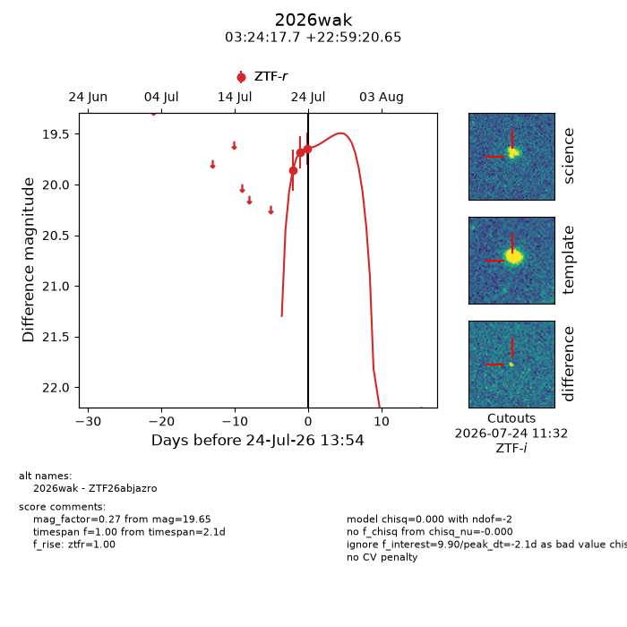
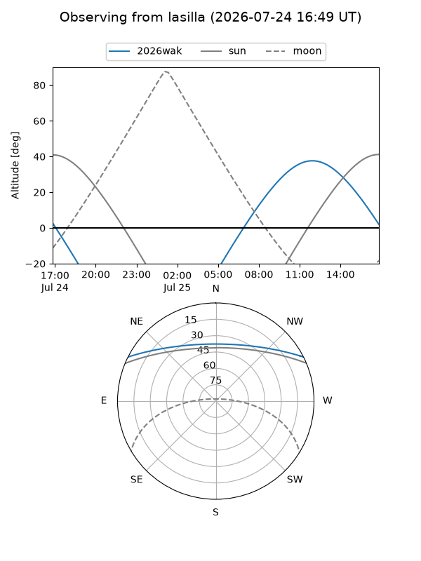
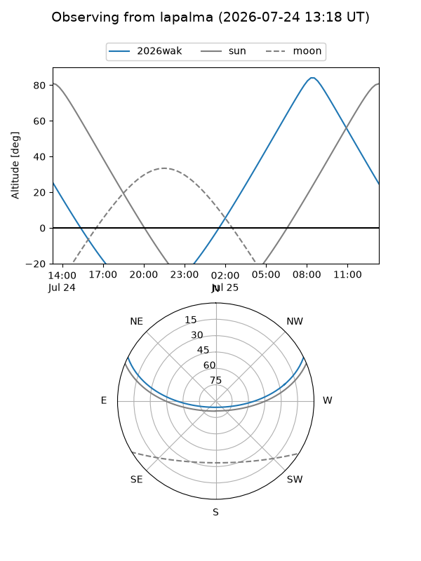
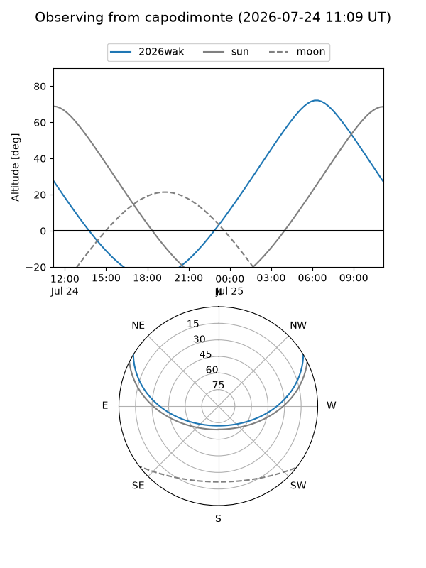
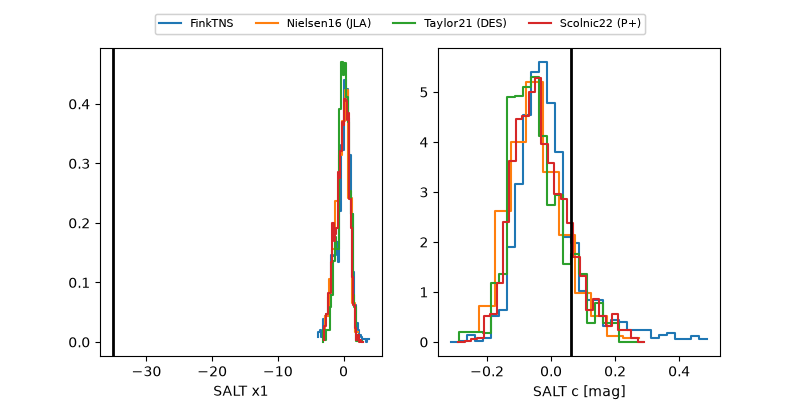

2026wak
Target 2026wak at 2026-07-24 13:56
Aliases and brokers:
FINK-ZTF: ztf.fink-portal.org/ZTF26abjazro
Lasair-ZTF: lasair-ztf.lsst.ac.uk/objects/ZTF26abjazro
ALeRCE-ZTF: alerce.online/object/ZTF26abjazro
YSE-PZ: ziggy.ucolick.org/yse/transient_detail/2026wak
TNS name: wis-tns.org/object/2026wak
Direct TNS query: direct search
alt names
ZTF26abjazro (ztf,fink_ztf)
2026wak (tns,yse)
Coordinates:
equatorial (ra, dec) = 51.0739,+22.98907
equatorial (HMS+DMS) = 03:24:17.72,+22:59:20.65
galactic (l, b) = (162.9848,-27.75178)
Flags:
TNS type: nan
peak dt: -2.1
Photometry:
last ztfr=19.65
3 ztfr detections
Lightcurve

Visibility



Additional plots
